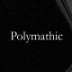

A Virtual Environment for Developing and Evaluating Automated Scientific Discovery Agents
Is your Agent Smarter than a 5th Grader?
Benchmark and data for scientific question answering over scholarly literature.
★ 163
Structured scientific hypothesis data released with Sparks of Science.
Large open scientific paper corpus for scholarly NLP and retrieval.
Open scholarly graph and API over works, authors, institutions, and concepts.
Computed materials properties, structures, and discovery infrastructure.
Curated bioactivity database for drug-discovery research.
Open chemical information and compound database.
Protein fitness prediction datasets and evaluation resources.
Cleaned 40M-document S2ORC derivative built specifically for language-model pretraining on scientific full text.
All arXiv Publications Pre-Processed for NLP, Including Structured Full-Text and Citation Network
Official requester-pays S3 bulk access to full-text sources and metadata for the entire arXiv corpus.
A Global Aggregation Service for Open Access Papers
Programmatic access to 200M+ papers with citation contexts, embeddings, author records and paper recommendations.
Bulk full-text XML for millions of openly licensed biomedical articles from PubMed Central.
JSON endpoints for preprint metadata, full-text links and published-version tracking across both preprint servers.
Programmatic access to submissions, reviews, rebuttals and decisions across major machine-learning venues.
Papers with Code has shut down; its domain now redirects to Hugging Face Papers, the de facto successor index.
The Open Reaction Database
Quantum chemistry structures and properties of 134 kilo molecules
Machine learning of accurate energy-conserving molecular force fields
SPICE, A Dataset of Drug-like Molecules and Peptides for Training Machine Learning Potentials
Over one million DFT-computed thermodynamic and structural properties of inorganic compounds with API access.
Automatic-flow repository of millions of computed materials entries exposed through a REST interface.
FAIR repository and analysis platform for raw and processed computational materials data across simulation codes.
NIST-hosted integration of DFT, machine-learning and experimental materials datasets plus public leaderboards.
Open platform for reproducible computational materials science with archived AiiDA provenance graphs.
Reference Raman, X-ray diffraction and chemistry data for well-characterized mineral specimens.
MolSSI public quantum chemistry results archive with a Python client for constructing large QC datasets.
Crystal structure generation with autoregressive large language modeling
Curated protein sequence and functional annotation knowledgebase exposed through a documented REST API.
Experimental three-dimensional biomolecular structures with programmatic search and data web APIs.
Over 200M predicted protein structures with per-residue confidence scores and free bulk download.
Public functional genomics repository of curated expression series, platforms and individual samples.
Uniformly processed functional genomics assays across human and mouse, served through a REST API.
Archive of raw high-throughput sequencing reads across organisms and study types.
EMBL-EBI nucleotide sequence archive mirroring and complementing SRA with its own browser and API.
Standardized single-cell corpus of tens of millions of cells with an API and in-browser exploration.
Proteomics identifications and mass spectrometry raw data repository hosted at EMBL-EBI.
Machine-readable wet-lab protocol repository, directly useful as a grounding source for protocol-planning agents.
Petabytes of LHC collision and simulated data released with virtual machines and runnable analysis examples.
Gravitational-wave strain data and event catalogs from the LIGO, Virgo and KAGRA observatories.
Space Telescope Science Institute multi-mission archive for Hubble, JWST, TESS and Kepler with programmatic access.
Astrophysics literature and citation database with a full API, the standard discovery layer for astronomy.
Sloan Digital Sky Survey imaging and spectra queryable directly through SQL.
Curated exoplanet and host-star parameter tables with TAP query access and bulk downloads.
Federated distribution network for CMIP climate model output and related earth-system simulation data.
Earth-observation data portal spanning NASA distributed active archive centers and their APIs.

The Well
a Large-Scale Collection of Diverse Physics Simulations for Machine Learning
CERN-operated DOI-issuing general repository hosting a large share of long-tail scientific artifacts and code snapshots.
Open Science Framework project registry and repository covering preregistrations, materials and data.
Large general-purpose research data repository issuing DOIs, widely used across social and life sciences.
Primary social-science data archive holding curated survey, administrative and longitudinal study collections.
German social-science data archive and infrastructure for survey and computational social science data.
Nothing matches those filters.